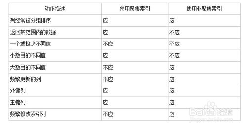

database
Table of Contents
- 1. cluster index
- 2. truncate和delete
- 3. group by，having，distinct
- 4. 优化SQL
- 4.1. 选择最有效率的表名顺序
- 4.2. WHERE子句中的连接顺序
- 4.3. SELECT子句中避免使用‘*’
- 4.4. 尽量减少访问数据库的次数
- 4.5. 使用rowId高效删除重复记录
- 4.6. 用TRUNCATE替代DELETE
- 4.7. 尽量多使用COMMIT
- 4.8. 用Where子句替换HAVING子句
- 4.9. 减少表的查询
- 4.10. 通过内部函数提高SQL效率
- 4.11. 使用表的别名(Alias)
- 4.12. 用EXISTS替代IN、用NOT EXISTS替代NOT IN
- 4.13. 用EXISTS替换DISTINCT
- 4.14. 用索引提高效率
- 4.15. 用>=替代>
- 4.16. 用UNION替换OR (适用于索引列)
- 4.17. 用UNION-ALL替换UNION
- 4.18. 带有DISTINCT,UNION,MINUS,INTERSECT,ORDER BY的SQL语句会启动SQL引擎执行耗费资源的排序(SORT)功能
- 4.19. 将不需要的记录在GROUP BY之前过滤掉
- 4.20. sql profile 语句
1 cluster index
1.1 聚集索引表示表中存储的数据按照索引的顺序存储
1.1.1 搜索效率高
1.1.2 只能有1个，一般是主键
1.1.3 更新数据影响大
1.2 非聚集索引表示数据存储在一个地方，索引存储在另一个地方，索引带有指针指向数据的存储位置
1.2.1 搜索效率稍低
1.2.2 能有多个
1.2.3 更新数据影响小

2 truncate和delete
2.1 delete会产生rollback的log，truncate不产生，速度快
2.2 truncate只适用表
2.3 truncate会释放空间，delete不会
2.4 truncate会回滚high water mark，delete不会
2.5 truncate是DDL操作，delete是DML操作
3 group by，having，distinct
3.1 HAVING后的条件不能用别名COUNT>3 必须使用COUNT(*) >3，否则报列名 "COUNT" 无效
3.2 having子句中的每一个元素并不一定要出现在select列表中
3.3 使用GROUP BY 子句时，SELECT列表中的非汇总列必须为GROUP BY列表中的项
3.4 ORDER BY 子句中的列必须出现在GROUP BY的列表项中
4 优化SQL
4.3 SELECT子句中避免使用‘*’
4.4 尽量减少访问数据库的次数
4.5 使用rowId高效删除重复记录
DELETE FROM EMP E
WHERE E.ROWID >
(SELECT MIN(X.ROWID)
FROM EMP X
WHERE X.EMP_NO = E.EMP_NO);
4.6 用TRUNCATE替代DELETE
4.8 用Where子句替换HAVING子句
4.8.1 HAVING只会在检索出所有记录之后才对结果集进行过滤
4.9 减少表的查询
4.10 通过内部函数提高SQL效率
4.11 使用表的别名(Alias)
4.11.1 使用表的别名并把别名前缀于每个Column上,可以减少解析的时间
4.12 用EXISTS替代IN、用NOT EXISTS替代NOT IN
4.12.1 exists 会尽量利用索引，而IN往往是全表查询
4.13 用EXISTS替换DISTINCT
/*低效*/ SELECT DISTINCT DEPT_NO,DEPT_NAME FROM DEPT D , EMP E WHERE D.DEPT_NO = E.DEPT_NO /*高效*/ SELECT DEPT_NO,DEPT_NAME FROM DEPT D WHERE EXISTS ( SELECT ‘X' FROM EMP E WHERE E.DEPT_NO = D.DEPT_NO);
4.14 用索引提高效率
4.14.1 避免在索引上使用NOT
4.14.2 避免在索引列上使用计算
/* 低效 */ SELECT … FROM DEPT WHERE SAL * 12 > 25000; /* 高效 */ SELECT … FROM DEPT WHERE SAL > 25000/12;
4.14.3 避免在索引列上使用IS NULL和IS NOT NULL
4.14.5 当心索引失效
4.14.6 查询中不要改变索引列的数据类型
4.15 用>=替代>
/* 高效 直接跳到第一个DEPT等于4的记录 */ SELECT * FROM EMP WHERE DEPTNO >=4 /* 低效 首先定位到DEPTNO=3的记录并且向前扫描到第一个DEPT大于3的记录 */ SELECT * FROM EMP WHERE DEPTNO >3
4.16 用UNION替换OR (适用于索引列)
4.17 用UNION-ALL替换UNION
4.18 带有DISTINCT,UNION,MINUS,INTERSECT,ORDER BY的SQL语句会启动SQL引擎执行耗费资源的排序(SORT)功能
4.19 将不需要的记录在GROUP BY之前过滤掉
/* 低效 */
SELECT JOB , AVG(SAL)
FROM EMP
GROUP BY JOB
HAVING JOB = ‘PRESIDENT'
OR JOB = ‘MANAGER'
/* 高效 */
SELECT JOB , AVG(SAL)
FROM EMP
WHERE JOB = ‘PRESIDENT'
OR JOB = ‘MANAGER'
GROUP BY JOB
4.20 sql profile 语句
SELECT EXECUTIONS , DISK_READS, BUFFER_GETS, ROUND((BUFFER_GETS-DISK_READS)/BUFFER_GETS,2) Hit_radio, ROUND(DISK_READS/EXECUTIONS,2) Reads_per_run, SQL_TEXT FROM V$SQLAREA WHERE EXECUTIONS>0 AND BUFFER_GETS > 0 AND (BUFFER_GETS-DISK_READS)/BUFFER_GETS < 0.8 ORDER BY 4 DESC;